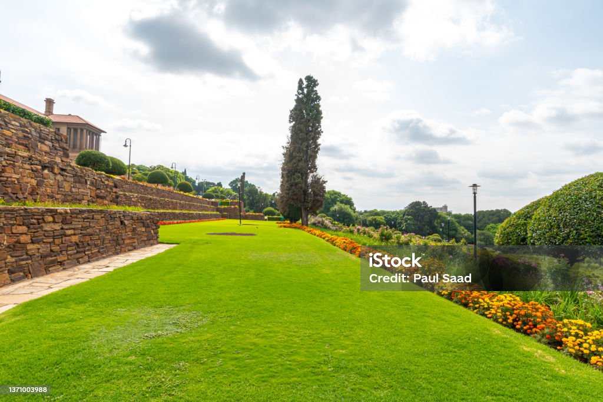
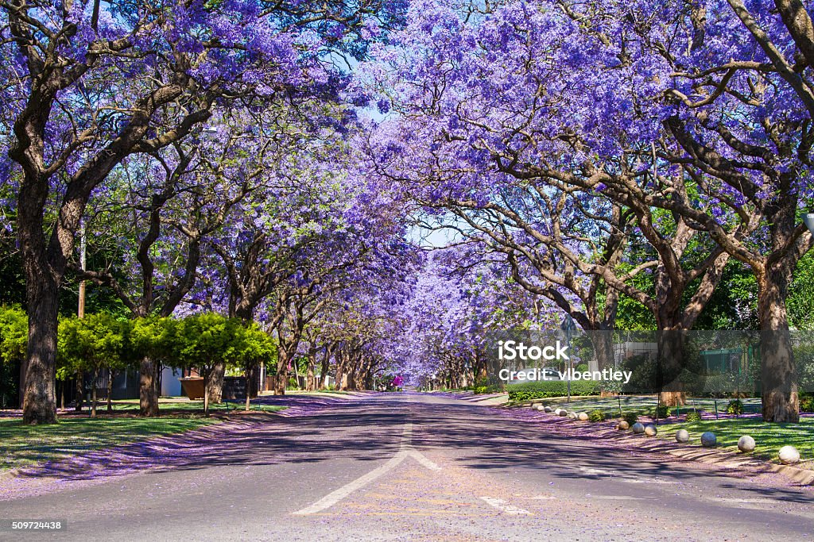

Welcome to Pretoria
The City of Tshwane: History, Culture, and Beauty
Learn More

Union Buildings
The seat of the South African government with stunning architecture.

Jacaranda Trees
Experience Pretoria's iconic purple blossoms every spring.

Voortrekker Monument
Commemorating South Africa's pioneer history and culture.
Famous Landmarks
| Landmark | Location | Key Features |
|---|---|---|
| Union Buildings | Pretoria CBD | Government Seat, Beautiful Gardens |
| Voortrekker Monument | Monument Hill | Pioneer History, Stunning Architecture |
| National Zoological Gardens | City Center | Animals, Family Outings |